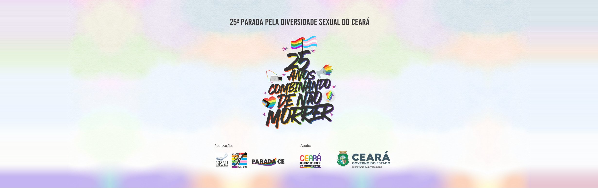
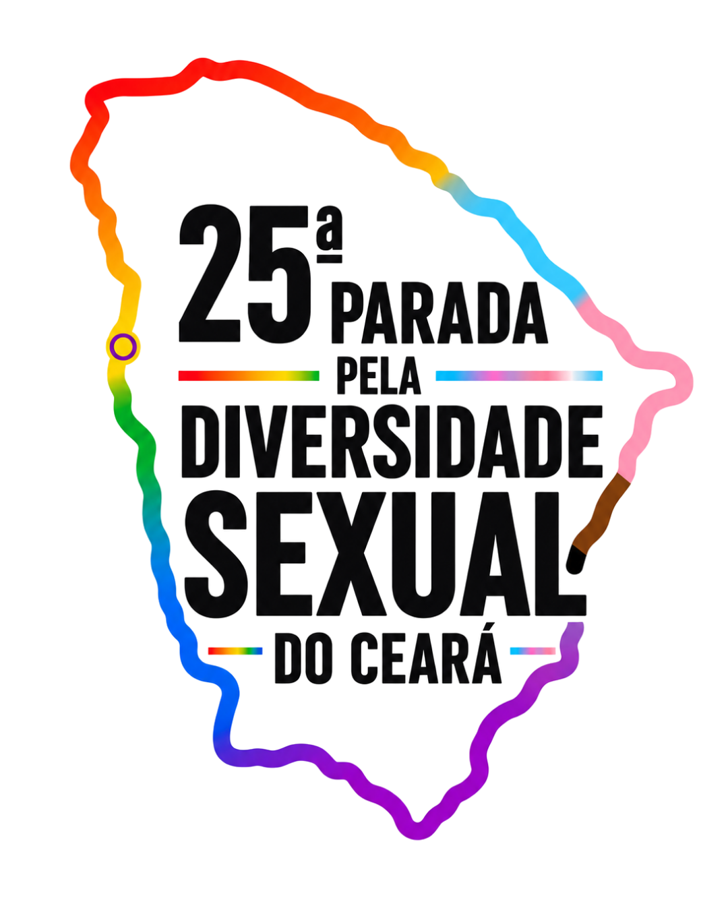

O Tema da 25ª Edição
25 Anos
Combinando
de Não Morrer!
A Parada pela Diversidade Sexual do Ceará chega a sua 25ª edição com o tema: "25 anos combinando de não morrer", que faz referência à célebre frase da escritora Conceição Evaristo. No livro "Olhos d'água", para destacar a capacidade do povo negro de sobreviver ao racismo, a mineira diz: "eles combinaram de nos matar, mas nós combinamos de não morrer". Assim, a Parada do Ceará aproxima-se ainda mais da agenda antirracista. Afinal, o Brasil é o país que mais mata pessoas LGBTQIA+ no mundo há 17 anos consecutivos.
A Parada será realizada no dia 28 de junho de 2026, data em que se celebra o Orgulho LGBTQIA+. Espera-se uma parada de grande celebração, mas também de demonstração das lutas LGBTQIA+ por respeito e cidadania, reunindo cerca de 1,5 milhão de pessoas na Avenida Beira-Mar em Fortaleza.
Programação Oficial
| Hora | Atividade |
|---|---|
| 15h | Concentração em frente à Barraca do Joca |
| 16h | Abertura oficial da 25ª Parada |
| 16h30 | Hora da militância LGBTQIA+ |
| 17h30 | Saída da concentração ao pôr do sol |
| 18h | Minuto de silêncio e protesto contra LGBTIFOBIA |
| 18h01 | Apresentações artivistas: DJs e Shows |
| 22h | Encerramento |

Programação Alusiva
Sessão Solene Homenagem aos 25 Anos de Paradas no Ceará
Sessão Solene Alusivo ao Mês do Orgulho LGBTQIA+
Exposição 25 Anos – Parada pela Diversidade Sexual do Ceará
4º Pedal do Orgulho
2º Sambão do Orgulho
Coletiva de Imprensa da 25ª Parada
Seminário-Ato da 25ª Parada pela Diversidade Sexual do Ceará
Esquenta da Parada (Ato-Show)
3º Festival da Diversidade (1ª Noite)
2º Encontro Cearense de Organizações de Paradas LGBTQIA+
I Encontro de Homens Gays do Ceará
3º Festival da Diversidade (2ª Noite)
Obs.: Programação sujeita a alterações.
Celebrando o Jubileu de Prata do maior evento de visibilidade LGBTQIA+ do estado. A luta por direitos ocupa todo o território cearense — das ruas às urnas, por democracia e contra a misoginia.
Marcos Legais
Participação de Trios Elétricos
Até o momento, oito trios elétricos estão confirmados na 25ª Parada. A programação de cada um será divulgada em breve aqui no site. Instituições que desejem colocar trios na avenida têm até 10 de junho para apresentar solicitação e documentação ao GRAB.
Cadastramento de Ambulantes
A Prefeitura Municipal de Fortaleza, através da Secretaria Regional II (SER II), fará o cadastramento de ambulantes que tenham interesse de trabalhar no evento. O edital será publicado em breve e disponibilizaremos aqui.
Diversidade e Acessibilidade
A 25ª Parada pela Diversidade Sexual do Ceará contará com a ala "Diversidade e Acessibilidade", na qual participarão pessoas com deficiência e condições específicas. Além de um espaço na avenida, os trios receberão as pessoas com deficiência – caso elas desejem – e intérpretes de libras serão disponibilizados para o momento da militância, que marca o início da marcha pela avenida Beira-Mar.
Um Verdadeiro Mar de Gente…
| Ano | Público Estimado |
|---|---|
| 1999 | 500 pessoas |
| 2001 | 2.500 pessoas |
| 2002 | 10.000 pessoas |
| 2003 | 30.000 pessoas |
| 2004 | 60.000 pessoas |
| 2005 | 200.000 pessoas |
| 2006 | 500.000 pessoas |
| 2007 | 800.000 pessoas |
| 2008 | 800.000 a 1.000.000 de pessoas |
| 2009 a 2017 | 1.000.000 de pessoas |
| 2018 a 2025 | 1.500.000 de pessoas |